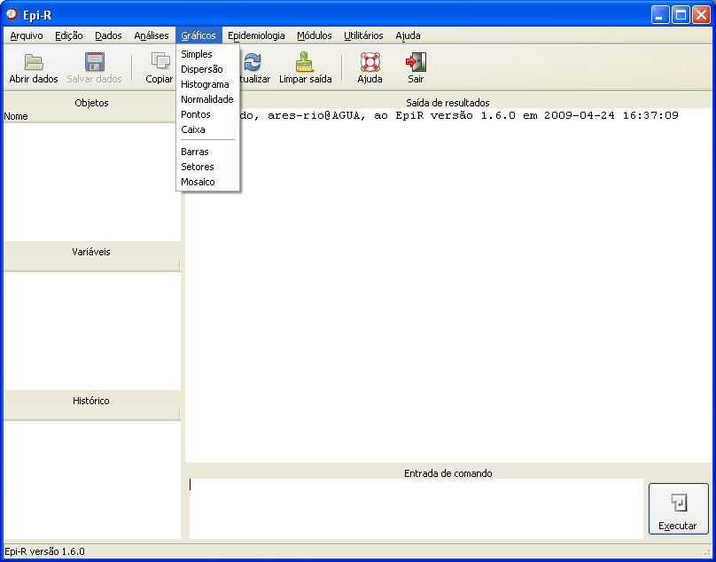

Menu Gráficos
Menu Gráficos

Figura 1. Janela principal do Epi-R destacando as opções do menu Gráficos.
Para obter informações detalhadas sobre cada opção, clique no link desejado:
Gráfico de barras
Gráfico de caixa
Gráfico de dispersão
Gráfico de normalidade
Gráfico de pontos
Gráfico de setores
Gráfico mosaico
Gráfico simples
Histograma
Gráfico de caixa
Gráfico de dispersão
Gráfico de normalidade
Gráfico de pontos
Gráfico de setores
Gráfico mosaico
Gráfico simples
Histograma